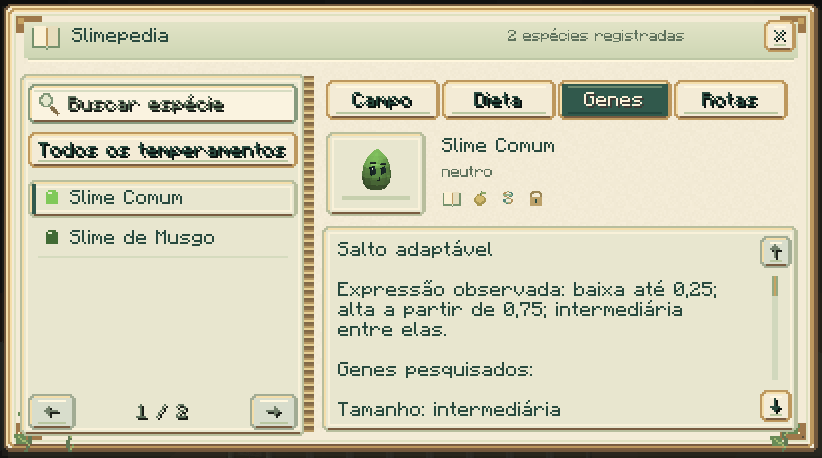
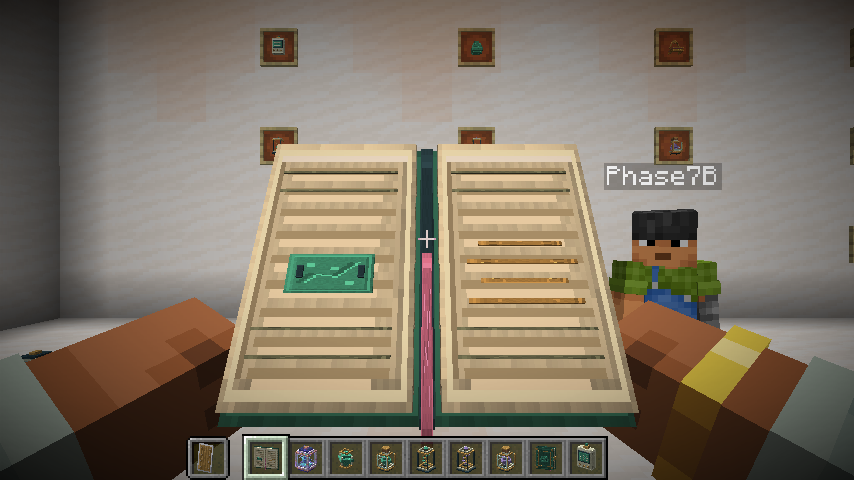
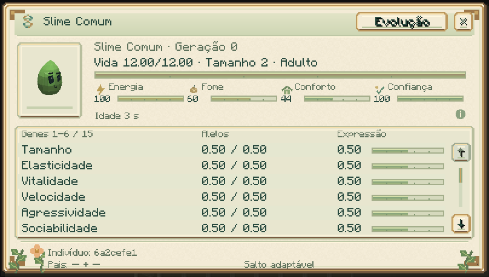

Pesquisa e progressão
Guia do mod · Materiais · Evolução
Slimepedia
Combine um livro e uma bola de slime para criar a Slimepedia. Use-a em um slime vivo e próximo para registrar a espécie; use-a no ar para consultar seu diário. Um clique ergue e abre o livro com as duas mãos antes de mostrar a consulta; funciona também segurando a Slimepedia na mão secundária. Feche com Esc ou o botão ×. A opção de movimento reduzido pula a transição de abertura. Busca, filtros e quatro abas organizam as descobertas. A página mostra uma prévia 3D da espécie observada; as abas e os ícones indicam o avanço da pesquisa.


| Aba | O que revela | Como avançar |
|---|---|---|
| Campo | Espécie, temperamento e locais observados | Observar com o livro |
| Dieta | Alimentos compatíveis | Alimentar manualmente com sucesso |
| Genes | Habilidade e pesquisa genética | Analisar um indivíduo ou sua cápsula |
| Rotas | Cruzamentos e metamorfoses realizados | Presenciar o nascimento como cuidador ou concluir a transformação |
O diário é pessoal e compartilhado entre seus livros. Observar, alimentar e analisar são descobertas independentes. O catálogo ainda não observado fica oculto; trocar livros não transfere pesquisa.
Analisador e estação genética
Use o analisador genético em um slime para consultar suas necessidades, idade, parentesco, alelos e rotas de evolução. Vida e necessidades aparecem em barras; a tabela compara os alelos e a expressão. Passe o mouse sobre os genes, as informações de tempo e o rodapé para consultar os detalhes.

A estação genética analisa um indivíduo dentro da cápsula. Insira cápsula ocupada, papel e redstone, pressione Analisar e depois Ver genes. A análise leva 100 ticks carregados e cobra os materiais ao concluir.
Vínculo e equipes
Agache e use o analisador em seu próprio slime para abrir o painel de vínculo e treinamento. Ensine Esperar, Seguir e Voltar ao lar, marque um local seguro e ative a cooperação dos parceiros. Água + Musgo ajudam plantas; Elétrico + Ferro apoiam a estação e a incubadora.
Incubadora
A incubadora acelera o crescimento de um filhote capturado. Cada ciclo manual exige alimento da dieta e um suplemento, e leva 200 ticks carregados. O filhote conserva seus genes e sua linhagem.
Herança e pesquisa
Reproduza adultos compatíveis e bem cuidados. O filhote herda alelos dos pais e pode apresentar mutações. A pesquisa diferencia alterações registradas no nascimento de herança comum e de histórico indisponível. Como interpretar a pesquisa.
Rotas avançadas
Colete materiais e essências, descubra cruzamentos e prepare as condições das metamorfoses. Os bosses entregam materiais usados em equipamentos, incubação e formas raras, como Prismático e Celestial.
Guia online
Na parte superior da Slimepedia, Guia online abre a documentação completa no navegador. Confira o endereço na confirmação; ao cancelar ou retornar, você continua no livro.